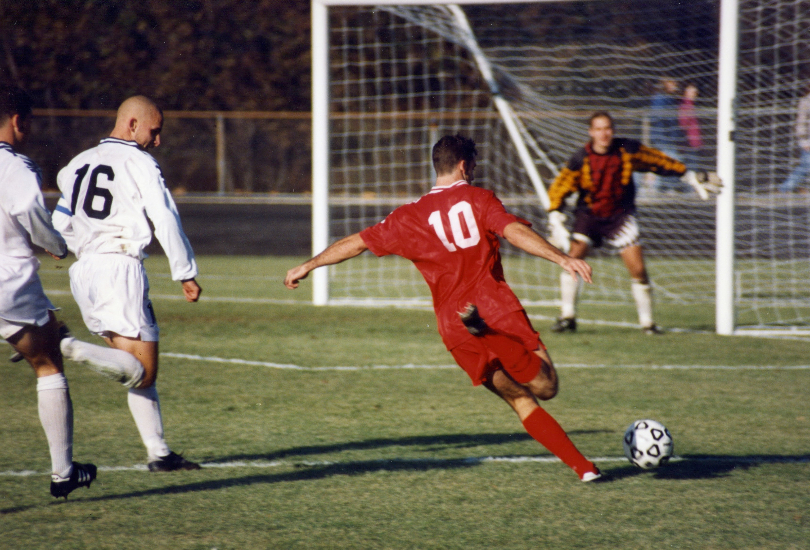
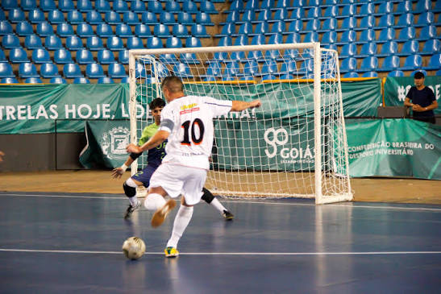
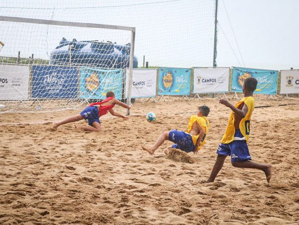

Futebol é um esporte de equipe jogado entre dois times de 11 jogadores cada. É considerado um dos esportes mais populares do mundo.
O jogo é realizado em um campo retangular gramado, com uma baliza em cada lado.
O objetivo é colocar a bola dentro da baliza adversária, marcando um gol. A equipe que fizer mais gols no final da partida vence.
O futebol moderno foi criado na Inglaterra com a formação da The Football Association, cujas regras serviram de base para o esporte atual.
O órgão responsável pelo futebol internacional é a FIFA, Federação Internacional de Futebol.
A principal competição internacional é a Copa do Mundo FIFA, realizada a cada quatro anos.
É o formato tradicional, com 11 jogadores em cada time, disputado em um campo grande de gramado.

É jogado em uma quadra dura, geralmente com 5 jogadores por equipe. O jogo é marcado por passes rápidos e muita técnica.

É disputado na areia, geralmente com 5 jogadores por equipe. Possui muitos lances rápidos e acrobáticos.
